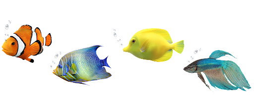
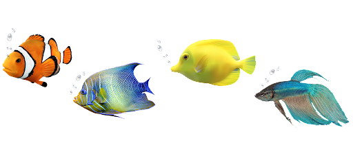

Pets | Nossas especialidades |
| Caninos | Nosso ponto mais forte é a parte veterinária, em que conseguimos atender as áreas de aculputra anestesiologia, cardiologia, ecocardiograma, cirurgia geral e especializada, dermatologia, diagnósticos por imagem radiologia, ultrassonografia, emergência e endocrionologia. Então pode assegurar-se que seu pet canino estará em boas mãos, para que logo retorne para casa para alegrar vocês, donos, novamente. |
| Felinos | Somos especializados em ração para felinos. Existem diversos tipos e marcas, então daremos
dicas de como vc poderá alimentar seu felino da melhor forma. Existem rações com mais indíce proteíco e com ingredientes naturais,
com grau de digestibilidade normal, para caso de problema estomacal; ração light e hipoalergênica; ração para saúde
do sistema urinário, e até ração para gatos idosos. Temos que ter em mente que alimentos como doces, chocolates, sal, cebola, alho, café, abacate, leite e uvas devem ser evitados. |
| Anfíbios | Os aquários mudam muito para esses animais, tanto que existem diversos tipos: temos o comunitário, indicado para criação de vários animais juntos; peixe jumbo, para anfíbios de grande porte; Água salobra, englobando fauna e flora da mesma espécie; Ciclídeos africanos, criação exclusiva desta espécie, e o aquário marinho, que engloba todos os outros tipos, com foco na manutenção deste tipo de animal. |
| Aves | Somos especialistas na parte veterinária aviária, tratamos aves semanalmente com base em seu corte de asa, conseguimos ajudá-las a conseguir voar normalmente, para que possam retornar ao seu lar firmes e fortes, com muita vida e carinho para te dar. |